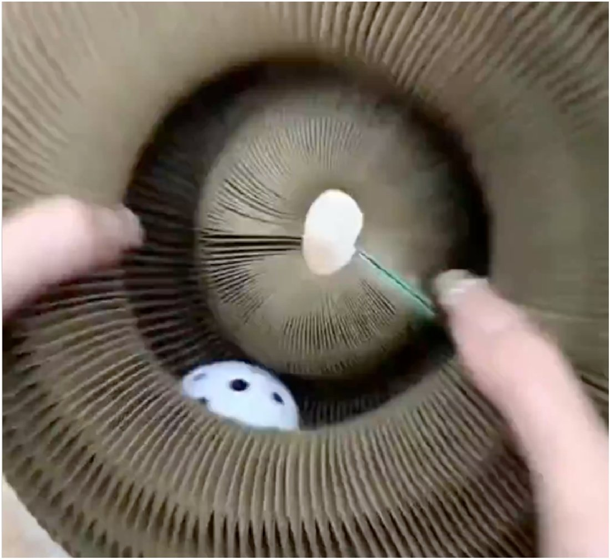

7 motivi per cui Scratchy sta aiutando i gatti italiani (anche i più apatici)
Nel mio lavoro di comportamentalista, la frase che mi sento ripetere più spesso è sempre la stessa: «Dottoressa, ho provato di tutto, e ormai mi sento in colpa.»
So di cosa parli.
Apri la porta di casa e il primo sguardo va al divano, con un nodo allo stomaco.
Forse hai smesso di invitare gente.
E qualche notte ti passa per la testa quel pensiero che non confesseresti a nessuno: «forse non avrei dovuto prenderlo.»
Se ti riconosci in queste righe, leggi fino in fondo.
Perché quello che vivi non è un capriccio del tuo gatto, e non è un tuo fallimento.
E si può chiudere.
1. Se il tuo gatto ti sveglia di notte e ignora il tiragraffi, è per un motivo preciso

"Il mio gatto distruggeva il divano da otto mesi. Avevo provato tre tiragraffi diversi, lo spruzzino, persino il biadesivo sui braccioli. Niente. Dopo cinque giorni con Scratchy ha smesso. Non perché 'gli piace di più' — perché finalmente fa qualcosa che il tiragraffi non gli faceva fare."
Il tuo gatto non è "maleducato".
È un predatore programmato per completare una sequenza precisa di quattro fasi: avvistamento, appostamento, cattura, morso.
Quando vive in appartamento e non completa mai quella sequenza, va incontro a una condizione che ha un nome clinico: si chiama Ipostimolazione Felina Cronica.
Il tiragraffi verticale copre una sola di quelle quattro fasi — l'affilamento delle unghie, che serve a marcare il territorio. Le altre tre le ignora.
Ecco perché il tuo gatto torna sul divano: non è un capriccio, è un istinto che cerca di chiudersi da un'altra parte.
Scratchy le attiva tutte e quattro.
Avvistamento dei tunnel interni, appostamento dietro le pieghe, cattura sulla superficie a strati, e quel morso finale che chiude la sequenza.
È quel momento di chiusura che fa smettere il gatto di cercare il divano.
2. "I calmanti e il laser sembrano funzionare — ma è proprio per quello che peggiorano tutto"

"Avevo provato di tutto: il puntatore laser, il Feliway, le bacchette con le piume, persino un secondo gatto come 'compagnia'. Sono 400 euro buttati. Scratchy non è un giocattolo, è un'altra cosa. Mio marito, che è il primo scettico della storia, ha ammesso che il divano è intatto da tre mesi."
La ricercatrice Mikel Delgado, dell'Università UC Davis, ha studiato l'uso del puntatore laser nei gatti: il problema è che il gatto insegue, ma non cattura mai.
La sequenza della caccia resta aperta, e non si chiude mai.
Il laser non stanca il gatto. Lo frustra.
Il Feliway maschera la tensione con i feromoni, ma non scarica niente.
Il sistema nervoso del gatto continua a chiedere quello che gli serve davvero: cacciare.
È come dare un calmante a chi ha bisogno di muoversi.
Scratchy non aggiunge un'altra distrazione. Toglie la causa.
3. "Ma è di cartone — può valere davvero?" Sì. Ed è esattamente il motivo per cui funziona.

"Quando è arrivato ho pensato: ho pagato per del cartone? Poi ho fatto due conti. Avevo speso molto di più in tiragraffi e diffusori che il mio gatto aveva ignorato. Questa è l'unica cosa che ha usato davvero — e il divano da allora non l'ha più toccato."
Lo so cosa pensi quando lo vedi.
È carta a nido d'ape.
Come può valere una cifra del genere?
Te lo giro al contrario.
Fermati un attimo e fai la somma di quello che hai già speso per questo problema.
Il tiragraffi. Magari due.
Il diffusore di feromoni, con le ricariche.
Il puntatore laser.
I topini nel cassetto.
Forse un secondo gatto "per fargli compagnia".
Non te la diciamo noi la cifra — falla tu.
Quasi sempre è molto più di quanto credi.
E tutto quel denaro è andato in cose che toccavano le unghie, l'olfatto, la noia.
Mai la causa.
Adesso la cosa che cambia tutto.
Una visita da un comportamentalista felino costa intorno ai 150 euro — a seduta.
E quasi sempre ne serve più di una.
Quello che ti prescrive, alla fine, è esattamente ciò che stai leggendo qui: terapia ambientale.
Trovarne uno disponibile, prenotare, pagare ogni seduta: è la strada lunga e cara.
Con Scratchy quella terapia la metti in casa una volta sola.
Non a ore, non a sedute.
Una volta.
Non stai comprando del cartone.
Stai comprando la prima cosa, dopo tutto quello che hai già speso, costruita per agire sulla causa — e per farlo nelle ore in cui tu non sei a casa.
La carta a nido d'ape non è un risparmio: è il materiale che si modifica sotto gli artigli, che stratifica la resistenza e che assorbe l'odore del gatto. Nessuna plastica lo fa.
È il mezzo, non il prezzo.
Se sei arrivata fin qui, hai già capito che il tuo gatto non ha bisogno dell'ennesimo oggetto.
Ha bisogno della cosa giusta.
👉 VOGLIO PROVARLO A CASA MIA4. "Gli altri oggetti durano tre giorni. Scratchy continua a funzionare per mesi — ecco perché"

"Ho un cassetto pieno di topini, palline con campanellini, due bacchette Trixie. Il mio gatto le degnava di uno sguardo un giorno e poi le ignorava per sempre. Con Scratchy è diverso: ci torna ogni giorno, da tre mesi, e nello stesso periodo il divano è rimasto intatto. Niente di quello che avevo preso prima ha tenuto così a lungo."
Diciamocelo: la cosa che attira di più il tuo gatto non è quella da 25€ che gli hai comprato.
È un elastico per capelli infilato sotto il letto, o un tappo di plastica che batte sul parquet alle 3 di notte.
Sai perché? Perché quegli oggetti hanno suono imprevedibile, resistenza variabile e rispondono al movimento del gatto.
È esattamente il profilo neurologico di una preda viva.
Scratchy replica quella combinazione in un formato sicuro.
La superficie cede in modo diseguale, come fa il corpo di un piccolo mammifero sotto le zampe.
Il movimento del gatto modifica la posizione dell'oggetto, esattamente come farebbe una preda che reagisce.
Per questo non si esaurisce dopo due giorni come tutto il resto: ogni volta che ci torna, risponde in modo un po' diverso.
Il cervello del gatto non riesce a archiviarlo come "già visto" — e continua a trattarlo come una preda da catturare, giorno dopo giorno.
5. "E se il mio gatto lo ignora, come ha ignorato tutto il resto?"

"Primi giorni: niente. L'ha guardato da lontano e basta. Stavo per scrivere per il reso. Poi verso il decimo giorno ci si è infilato dentro. Ora ci passa ore."
È la domanda più giusta che puoi farti, e se il tuo gatto ha già ignorato tre tiragraffi hai tutte le ragioni per essere diffidente.
Ma c'è una cosa che devi sapere sui primi giorni, perché quasi nessuno la spiega e fa abbandonare le persone troppo presto.
Quando arriva un oggetto nuovo, il cervello del gatto non lo usa subito. Lo mappa in silenzio per qualche giorno — odore, posizione, sicurezza — prima di fidarsi.
Si chiama neofobia, ed è un comportamento del tutto normale.
Sembra disinteresse.
In realtà è studio.
I primi tre, quattro giorni il tuo gatto probabilmente girerà intorno a Scratchy senza usarlo.
Più è spento o diffidente, più sarà lento a partire — proprio perché ha smesso di cercare.
Non è il segno che non funziona.
È la fase prevista.
Ed è esattamente per questo che hai 60 giorni per provarlo a casa tua, non tre.
Il tempo perché un gatto cambi le sue abitudini non si misura in giorni, ma in settimane.
Se dopo due mesi non è cambiato niente, scrivi alla nostra assistenza e organizziamo il reso, senza che tu debba dimostrare niente e senza rimandare indietro il prodotto.
Una persona vera ti risponde entro 24 ore.
6. "Migliaia di proprietari, e un dato che cambia tutto"

"L'ho preso dopo mesi di divano distrutto. In dieci giorni ha smesso di fare le unghie sul divano. Vale dieci volte quello che ho pagato."
Da quando Scratchy è arrivato in Italia, migliaia di proprietari hanno lasciato una recensione, con una media di 4,8 su 5.
Ma il dato che conta di più è un altro: tanti clienti, dopo aver visto il primo funzionare, ne ordinano un secondo per un'altra stanza nel giro di poche settimane.
Tutte queste persone hanno scoperto la stessa cosa: il problema non era il loro gatto.
E non erano loro.
Era una causa che nessuno aveva mai spiegato — e che nessun tiragraffi, diffusore o gioco poteva toccare.
Il tuo gatto non è rotto.
E tu non hai sbagliato niente.
Vi mancava solo lo strumento giusto.
7. "60 giorni per provarlo. Zero rischi."

"Ho preso il Kit 1+1, uno per il salotto, uno per la camera. È la prima volta da quando ho il gatto che dormo otto ore di fila. Non ci credevo. Adesso ne regalerò uno a mia sorella che ha lo stesso problema."
I gatti sono diversi l'uno dall'altro.
Quello che funziona per uno può non funzionare subito per un altro: è il primo principio del comportamento felino.
Per questo abbiamo creato la Promessa Scratchy: se entro 60 giorni Scratchy non è diventato il posto preferito del tuo gatto, ti rimborsiamo.
Senza domande, senza moduli, senza dover rimandare indietro il prodotto.
Ma su una cosa voglio essere chiara, perché è quella che fa la differenza tra chi vede risultati e chi no.
Un gatto non vive in un punto solo della casa. Si muove tra il divano, la finestra, il corridoio, la stanza dove dormi.
E la Ipostimolazione Felina Cronica si manifesta in tutti quei punti, non in uno.
Per questo il trattamento, per un singolo gatto, non è un oggetto messo in un angolo: sono due postazioni nei punti dove quel gatto passa più tempo.
Uno solo viene ignorato come viene ignorato il tiragraffi — perché sta in un posto, e il gatto vive in cinque.
Ecco perché il Kit 1+1, con i suoi 2 Scratchy, è la dose completa per un gatto.
Non due gatti, un gatto.
Uno nella stanza dove vive di più, uno nel punto di passaggio.
È così che il trattamento copre il territorio e funziona davvero.
E qui arriva la cosa importante, perché è il motivo più comune per cui qualcuno mi scrive "ho provato e non è cambiato niente":
Se hai più di un gatto, ti serve un kit per gatto.
Non un kit diviso tra due.
Due gatti non condividono il territorio — uno se lo prende, l'altro resta fuori e continua esattamente come prima.
Chi ha due gatti e prova a far bastare un solo kit, sta trattando un gatto solo e lasciando l'altro esattamente al punto di partenza.
Quindi la regola è semplice:
Un gatto → Kit 1+1 (29,90 euro).
La dose completa per un gatto.
Due gatti → Kit 2+2 (59,80 euro).
La dose completa per due gatti, ed è la scelta più presa proprio per questo.
C'è però una cosa che quasi nessuno nota all'inizio.
Il Kit 2+2 non include solo un pannello in più: include anche la Guida all'Utilizzo (vale 19,90 euro), ed è la parte che fa davvero la differenza.
Perché il problema, nove volte su dieci, non è il pannello — è come lo introduci.
Un gatto messo davanti al pannello senza il rituale giusto lo annusa una volta e se ne va, e tu resti convinta che "il mio gatto lo ignora".
La Guida ti dice esattamente dove posizionarlo, come farglielo scoprire da solo nei primi giorni e cosa fare se all'inizio lo evita.
È la differenza tra avere i pannelli in casa e avere due gatti che li usano davvero entro i 14 giorni.
Chi prende solo il kit base riceve i pannelli, ma non riceve questo.
Ed è il motivo per cui, a parità di prezzo per pannello, la maggior parte sceglie il Kit 2+2: non per spendere di più, ma per avere in mano anche il modo di farlo funzionare.
Più gatti → Kit 3+3 (69,90 euro).
Una dose completa per ogni gatto, sempre — Guida all'Utilizzo inclusa anche qui.
Non è un modo per farti spendere di più.
È l'unico modo perché il trattamento funzioni su tutti i tuoi gatti — e perché, se più avanti qualcosa non va, possiamo davvero capire il perché, invece di scoprire che metà dei tuoi gatti non era mai stata trattata.

- ✓ Spedizione gratuita in Italia in 5-9 giorni
- ✓ Garanzia 60 giorni soddisfatti o rimborsati
Clicca sotto per riscattare l'offerta finché è disponibile.
VOGLIO L'OFFERTASCORTE LIMITATE: fino a esaurimento